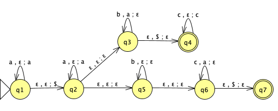
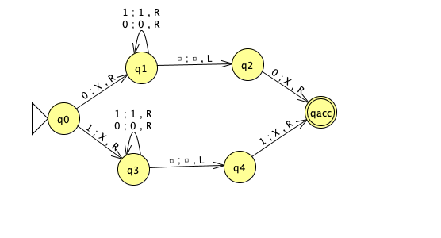

Due: 5/5/22 at 5pm (no penalty late submission until 8am next morning), via Gradescope
In this assignment,
You will practice designing and working with context-free grammars and pushdown automata. You will use general constructions to explore the class of context-free languages. You will also practice with the formal definition of Turing machines.
Resources: To review the topics you are working with for this assignment, see the class material from Weeks 4 and 5. We will post frequently asked questions and our answers to them in a pinned Piazza post.
Reading and extra practice problems: Sipser Sections 2.1, 2.2, 2.3 (partially). Chapter 2 exercises 2.1, 2.2, 2.3, 2.4, 2.6, 2.9, 2.10, 2.11, 2.12, 2.13, 2.16, 2.17. Chapter 2 problem 2.30. Chapter 3 exercises 3.1, 3.2.
Key Concepts: Pushdown automata, stack, context-free grammar, derivations, context-free languages, Turing machines, halting, looping.
For all HW assignments:
Weekly homework may be done individually or in groups of up to 3 students. You may switch HW partners for different HW assignments. The lowest HW score will not be included in your overall HW average. Please ensure your name(s) and PID(s) are clearly visible on the first page of your homework submission and then upload the PDF to Gradescope. If working in a group, submit only one submission per group: one partner uploads the submission through their Gradescope account and then adds the other group member(s) to the Gradescope submission by selecting their name(s) in the “Add Group Members" dialog box. You will need to re-add your group member(s) every time you resubmit a new version of your assignment. Each homework question will be graded either for correctness (including clear and precise explanations and justifications of all answers) or fair effort completeness. You may only collaborate on HW with CSE 105 students in your group; if your group has questions about a HW problem, you may ask in drop-in help hours or post a private post (visible only to the Instructors) on Piazza.
All submitted homework for this class must be typed. You can use a word processing editor if you like (Microsoft Word, Open Office, Notepad, Vim, Google Docs, etc.) but you might find it useful to take this opportunity to learn LaTeX. LaTeX is a markup language used widely in computer science and mathematics. The homework assignments are typed using LaTeX and you can use the source files as templates for typesetting your solutions. To generate state diagrams of machines, we recommend using Flap.js or JFLAP. Photographs of clearly hand-drawn diagrams may also be used. We recommend that you submit early drafts to Gradescope so that in case of any technical difficulties, at least some of your work is present. You may update your submission as many times as you’d like up to the deadline.
Integrity reminders
Problems should be solved together, not divided up between the partners. The homework is designed to give you practice with the main concepts and techniques of the course, while getting to know and learn from your classmates.
You may not collaborate on homework with anyone other than your group members. You may ask questions about the homework in office hours (of the instructor, TAs, and/or tutors) and on Piazza (as private notes viewable only to the Instructors). You cannot use any online resources about the course content other than the class material from this quarter – this is primarily to ensure that we all use consistent notation and definitions we will use this quarter and also to protect the learning experience you will have when the ‘aha’ moments of solving the problem authentically happen.
Do not share written solutions or partial solutions for homework with other students in the class who are not in your group. Doing so would dilute their learning experience and detract from their success in the class.
You will submit this assignment via Gradescope (https://www.gradescope.com) in the assignment called “HW4CSE105Sp22”.
Assigned questions
For this question, we are working over the fixed alphabet \(\{a,b,c\}\).
(Graded for fair effort completeness1)
Consider the PDA over this alphabet with state diagram

Give an informal description of this PDA and describe the language it recognizes using set builder notation.
Hint: Compare the PDA with the machine in Example 2.16 and Figure 2.17 of the textbook (page 116), which recognizes the language \(\{a^i b^j c^k \mid i,j,k \geq 0 \textrm{ and } i=j \textrm{ or } i=k\}\) and identify the main differences.
(Graded for correctness2)
Consider the CFG \((\{X, S, S_1, S_2, T, Y\}, \{a,b,c\}, R, X)\) where the set of rules \(R\) has \[\begin{aligned} X &\to aX \mid S \mid T \\ S &\to S_1S_2 \\ S_1 &\to aS_1 b \mid \varepsilon \\ S_2 &\to cS_2 \mid \varepsilon\\ T &\to aTc \mid Y \\ Y &\to bY \mid \varepsilon \end{aligned}\]
For each of the following strings, either give a derivation in this grammar that proves the string is in the language generated by the grammar, or explain why there is no such derivation.
\(aaaa\)
\(abbc\)
\(aabb\)
(Graded for correctness) Modify the start variable of this context-free grammar to get a different CFG (with the same set of variables, set of terminals, and set of rules) that generates an infinite regular language, if possible. A complete solution will include either (1) the formal definition of this new CFG and an explanation of why the language it recognizes is both infinite and regular, or (2) a sufficiently general and correct argument for why there is no way to choose the start variable to satisfy this requirement.
(Graded for correctness) In this question, you’ll practice working with formal general constructions for PDAs and translating between state diagrams and formal definitions.
Suppose \[M = (Q, \Sigma, \Gamma, \delta, q_0, F)\] is a PDA. We can define a new PDA \(N\) so that \(L(M) = L(N)\) and \(N\) is guaranteed to have an empty stack at the end of any accepting computation. Informally, the construction is as follows: Add three new states \(q_1', q_2', q_3'\) and one new stack symbol \(\#\).
One of the new states \(q_1'\) will be the new start state and it has a spontaneous transition to the old start state \(q_0\) which pushes the new stack symbol \(\#\) to the stack.
The transitions between the old states are all the same.
From each of the old accept states, add a spontaneous transition (that doesn’t modify the stack) to the second new state \(q_2'\).
In this state \(q_2'\), pop all old stack symbols from the stack without reading any input.
When the new stack symbol \(\#\) is on the top of the stack, transition to the third new state \(q_3'\) and accept.
Assume \(\{ q_1', q_2', q_3'\} \cap Q = \emptyset\) (otherwise, relabel some of the states in \(Q\)) and assume that \(\# \notin \Gamma\) (otherwise, relabel this stack symbol in \(\Gamma\)). Define \(N\) to be \[N = ( Q \cup \{ q_1', q_2', q_3'\} , \Sigma, \Gamma \cup \{\#\}, \delta_N, q_1', \{q_3'\} )\] where \(\delta_N : Q \cup \{ q_1', q_2', q_3'\}~~\times~~ \Sigma_\varepsilon ~~\times~~\Gamma_\varepsilon\cup \{\#\} \to \mathcal{P}( Q \cup \{ q_1', q_2', q_3'\} ~~\times ~~\Gamma_\varepsilon\cup \{\#\})\) is defined as \[\delta_N ( ~(q, x, y)~) = \begin{cases} \{ (q_0, \#) \} &\qquad \text{if $q = q_1'$, $x = \varepsilon$, $y = \varepsilon$} \\ \delta( ~(q, x, y)~) & \qquad \text{if $q \in Q$, $x \in \Sigma$, $y \in \Gamma_\varepsilon$} \\ \delta( ~(q, x, y)~) & \qquad \text{if $q \in Q$, $x=\varepsilon$, $y \in \Gamma$} \\ \delta( ~(q, x, y)~) & \qquad \text{if $q \in Q \setminus F$, $x=\varepsilon$, $y =\varepsilon$} \\ \delta( ~(q, x, y)~) \cup \{ (q_2', \varepsilon) \} & \qquad \text{if $q \in F$, $x=\varepsilon$, $y =\varepsilon$} \\ \{ (q_2', \varepsilon)\} & \qquad \text{if $q = q_2'$, $x = \varepsilon$, $y \in \Gamma$} \\ \{ (q_3', \varepsilon)\} & \qquad \text{if $q = q_2'$, $x = \varepsilon$, $y = \#$} \\ \emptyset & \qquad \text{otherwise} \end{cases}\]
(Graded for correctness) Illustrate this construction by considering the PDA \(M\) over the input alphabet \(\{a,b,c\}\)
and applying the construction above to create the related PDA \(N\) and include its state diagram in your submission. Note: you may include the formal definition of your PDA, but this is not required.
(Graded for correctness) Pick a string of length \(5\) over the alphabet of the PDA \(M\) and use it to demonstrate the difference in \(M\) and in \(N\) by
describing an accepting computation of \(M\) on this string for which the stack is not empty at the end of the computation, and
describing an accepting computation of \(N\) on this string for which the stack is empty at the end of the computation.
In your descriptions of these computations, include both the sequence of states visited by the machine as well as snapshots of the full contents of the stack at each step in the computation. You may hand-draw and scan these traces of the computations.
Hint: You will need to pick your example string wisely. It must be accepted by \(M\) and there must be a computation of \(M\) on your string which ends with a nonempty stack. Not all choices of length \(5\) strings work.
(Graded for fair effort completeness)
Fix an arbitrary alphabet \(\Sigma\). Prove that the class of context-free languages over \(\Sigma\) is closed under concatenation in two ways:
Prove that, for any languages \(L_1, L_2\) over \(\Sigma\), if there are PDAs \(M_1\) and \(M_2\) such that \(L_1 = L(M_1)\) and \(L_2 = L(M_2)\), then there is a PDA that recognizes \(L_1 \circ L_2\).
Prove that, for any languages \(L_1, L_2\) over \(\Sigma\), if there are CFGs \(G_1\) and \(G_2\) such that \(L_1 = L(G_1)\) and \(L_2 = L(G_2)\), then there is a CFG that generates \(L_1 \circ L_2\).
Consider the Turing machine \(T\) over the input alphabet \(\Sigma = \{0,1\}\) with the state diagram below (the tape alphabet is \(\Gamma = \{ 0,1,X,\square\}\)). Convention: any missing transitions in the state diagram have value \((qrej,\square,R)\)

(Graded for correctness) Specify an example string \(w_1\) of length \(4\) over \(\Sigma\) that is accepted by this Turing machine, or explain why there is no such example. A complete solution will include either (1) a precise and clear description of your example string and a precise and clear description of the accepting computation of the Turing machine on this string or (2) a sufficiently general and correct argument why there is no such example, referring back to the relevant definitions.
To describe a computation of a Turing machine, include the contents of the tape, the state of the machine, and the location of the read/write head at each step in the computation.
Hint: In class we’ve drawn pictures to represent the configuration of the machine at each step in a computation. You may do so or you may choose to describe these configurations in words.
(Graded for correctness) Specify an example string \(w_2\) of length \(3\) over \(\Sigma\) that is rejected by this Turing machine or explain why there is no such example. A complete solution will include either (1) a precise and clear description of your example string and a precise and clear description of the rejecting computation of the Turing machine on this string or (2) a sufficiently general and correct argument why there is no such example, referring back to the relevant definitions.
(Graded for correctness) Specify an example string \(w_3\) of length \(2\) over \(\Sigma\) on which the computation of this Turing machine loops or explain why there is no such example. A complete solution will include either (1) a precise and clear description of your example string and a precise and clear description of the looping (non-halting) computation of the Turing machine on this string or (2) a sufficiently general and correct argument why there is no such example, referring back to the relevant definitions.
(Graded for fair effort completeness) Write an implementation level description of the Turing machine \(T\).
This means you will get full credit so long as your submission demonstrates honest effort to answer the question. You will not be penalized for incorrect answers. To demonstrate your honest effort in answering the question, we ask that you include your attempt to answer *each* part of the question. If you get stuck with your attempt, you can still demonstrate your effort by explaining where you got stuck and what you did to try to get unstuck.↩︎
This means your solution will be evaluated not only on the correctness of your answers, but on your ability to present your ideas clearly and logically. You should explain how you arrived at your conclusions, using mathematically sound reasoning. Whether you use formal proof techniques or write a more informal argument for why something is true, your answers should always be well-supported. Your goal should be to convince the reader that your results and methods are sound.↩︎